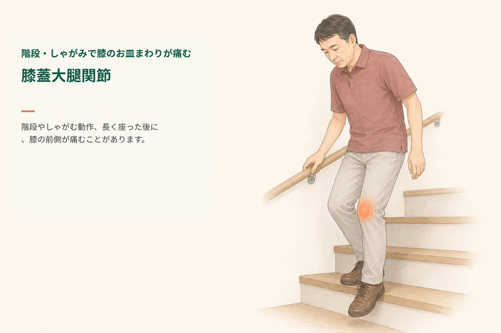
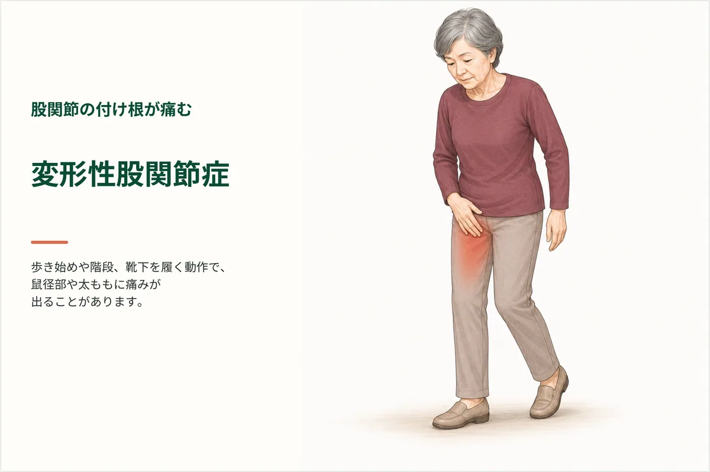
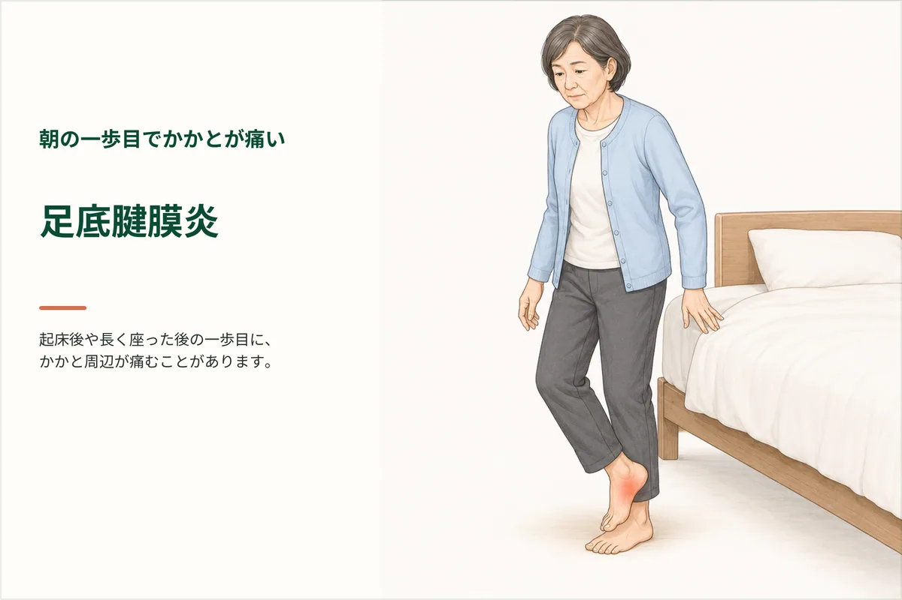
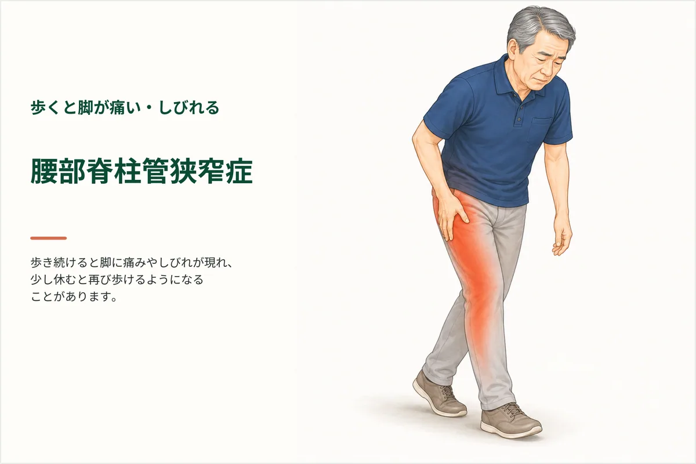
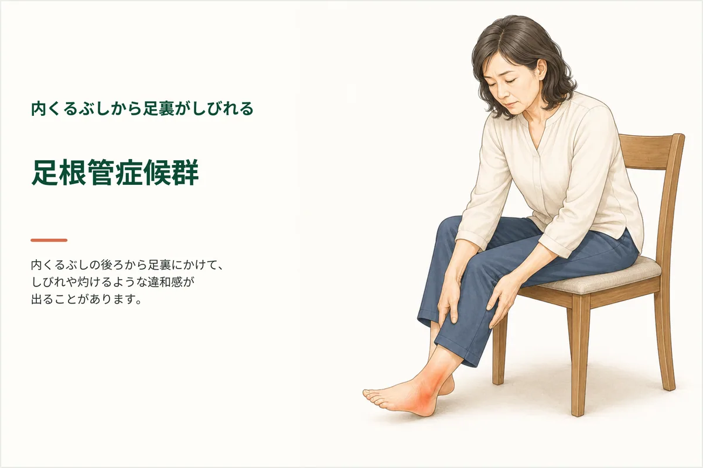
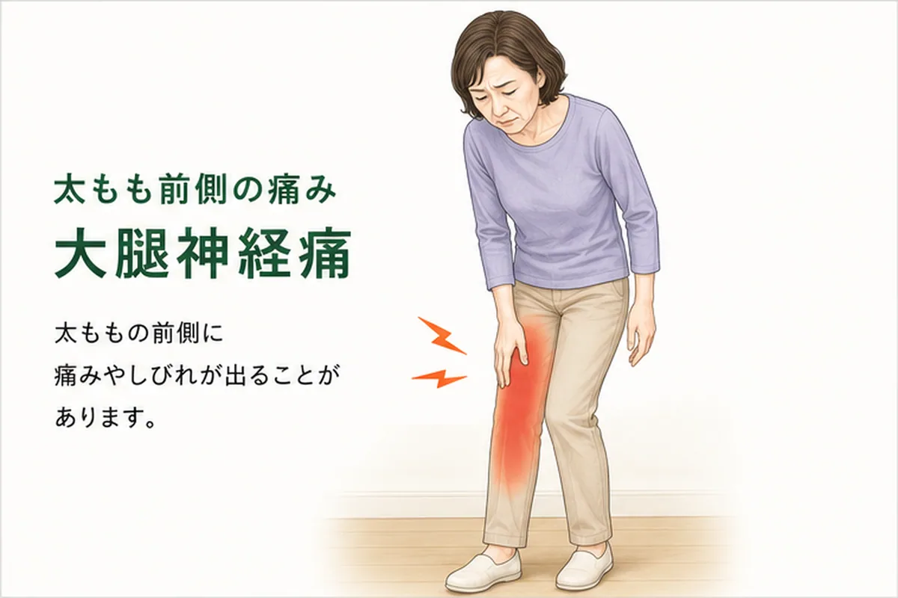
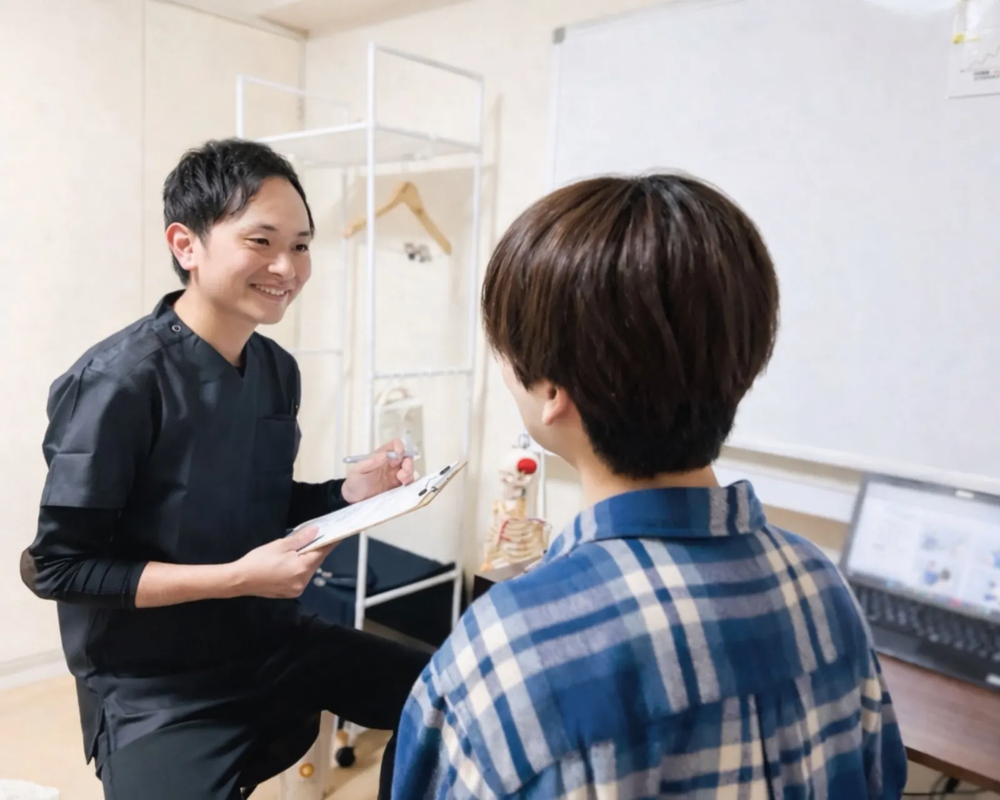
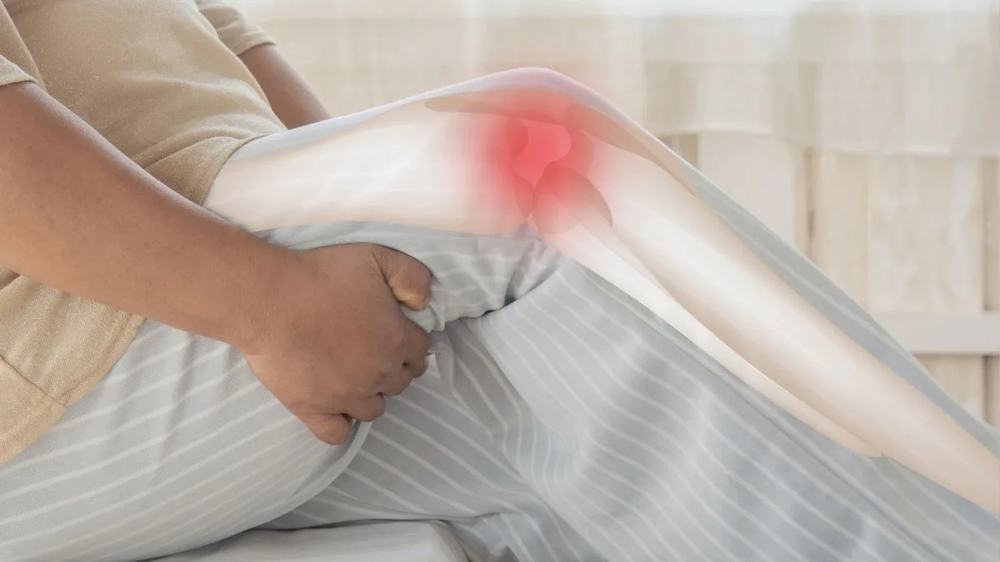

階段・しゃがみで膝のお皿まわりが痛む｜確認したい負担
階段やしゃがみ動作、長時間座ったあとに膝のお皿まわりが痛む方へ。膝蓋大腿関節の役割、負担が重なる場面、腫れがあるときの受診目安を説明します。
Column
腰痛、坐骨神経痛、股関節痛、膝の痛みなど、足腰の不調でお悩みの方へ。来院前に知っておきたい身体の見方やセルフケアの考え方を、整体院ひざこぞうがわかりやすく整理します。
Articles
52件の記事を表示しています

階段やしゃがみ動作、長時間座ったあとに膝のお皿まわりが痛む方へ。膝蓋大腿関節の役割、負担が重なる場面、腫れがあるときの受診目安を説明します。

前かがみや長時間の座位で腰から脚へ痛み・しびれが広がる方へ。腰椎椎間板ヘルニアの基本、画像だけで判断できない理由、筋力や排尿・排便の受診目安を説明します。

歩き始めや靴下の着脱で脚の付け根が痛む方へ。変形性股関節症でみられる生活上の変化、膝や腰にも症状が出る場合、受診目安と無理のない記録方法を柏市の整体院が説明します。

朝起きた直後や座ったあとの一歩目にかかとが痛む方へ。足底腱膜炎でみられる特徴、別の病気との区別、医療機関への相談目安と歩行量・靴の記録方法を説明します。

歩くと脚に痛みやしびれが出て、座ると少し楽になる方へ。腰部脊柱管狭窄症でみられる間欠跛行、医療機関へ相談したい変化、歩ける距離の記録方法を柏市の整体院が説明します。

歩くと身体が左右へ揺れる、片脚へ体重を移しにくい方へ。中殿筋の位置と役割、筋力だけで説明できない理由、転倒を避けながら日常動作を観察する方法を説明します。

内くるぶしの後ろから足裏にしびれや灼ける感覚がある方へ。足根管と脛骨神経の位置、腰やほかの末梢神経との違い、受診目安と日常で記録したい変化を説明します。

長く座ったあと立つと脚の付け根が詰まる、歩幅を広げにくい方へ。腸腰筋の位置と役割、股関節前面の違和感を筋肉だけで決めない理由、安全な観察方法を説明します。

変形性膝関節症と言われ、立ち上がりや階段で膝が痛む方へ。画像所見と症状を分けて考える理由、腫れや熱感の受診目安、日常動作を安全に記録する方法を説明します。

すねの外側から足の甲にしびれがある方へ。総腓骨神経の通り道、膝外側への圧迫、足が上がりにくいときの受診目安、無理に症状を出さず日常の変化を記録するセルフチェックを、柏市の整体院ひ…

太ももの外側に痛み、しびれ、灼熱感がある方へ。大腿外側皮神経が関係するときの特徴、坐骨神経痛との違い、受診の目安、衣服や姿勢の見直し方を柏市の整体院ひざこぞうが整理します。自己判…

太ももの前側に痛みやしびれがある方へ。大腿神経の働き、大腿外側皮神経や腰からくる症状との違い、膝に力が入りにくいときの受診目安、安全に身体を動かす考え方を柏市の整体院ひざこぞうが…

お尻から太ももの裏のビリビリした痛みやしびれでお悩みの方へ。柏市あけぼのの整体院ひざこぞうが、坐骨神経痛が湿布やマッサージだけでは変わりにくい理由と、足腰専門整体の考え方を解説し…

変形性膝関節症と診断され、手術や歩行に不安がある方へ。医師への相談を続けながら、歩く量や股関節、足首の使い方を見直す考え方を整理します。

膝の内側が痛む方へ。鵞足炎、変形性膝関節症、神経が関係する痛みに似た特徴と、自己判断せず受診したい状態を整理します。

膝に水がたまって歩いてよいか迷う方へ。歩く量を増やさないほうがよい状態、翌日の反応の見方、整形外科へ相談する目安を整理します。

柏駅周辺で膝痛に悩む方へ。階段、歩き始め、正座、しゃがみ動作で痛むときに確認したいことと、受診の目安を場面別に整理します。

柏市で膝痛があり、整形外科と整体のどちらに相談すべきか迷う方へ。受診を優先したい症状と、整体で確認できる動き方の問題を整理します。

歩行時に股関節が痛む方へ。歩幅、体重移動、骨盤の揺れ、膝や腰への負担との関係を柏市の整体院ひざこぞうが解説します。
足をついた瞬間に股関節がズキッと痛む方へ。荷重、骨盤、股関節まわりの筋肉の使い方を柏市の整体院ひざこぞうが解説します。
寝返りで股関節が痛い、夜にズキッとして眠りが浅い方へ。寝姿勢、筋肉の防御反応、股関節の負担を柏市の整体院ひざこぞうが解説します。
柏市でしゃがむと股関節が痛い、股関節の硬さと膝痛の関係が気になる方へ。膝・骨盤・足首まで含めた見方を整体院ひざこぞうが整理します。

足底筋膜炎やかかとの痛みで朝の一歩目がつらい方へ。足裏アーチ、足指、ふくらはぎ、膝や股関節との関係を解説します。
膝の裏側の痛みや張りで不安な方へ。ベーカー嚢腫、ハムストリング腱、膝関節の腫れ、歩き方のクセなど、考えられる原因と受診目安を柏市の整体院ひざこぞうが解説します。

毎日ストレッチしているのに体が柔らかくならない方へ。呼吸、30秒キープ、動的ストレッチの使い分けなど、整体師の視点で効果を出す3つのコツを解説します。

夜中のこむら返りや運動中の筋肉の攣りで困っている方へ。水分・電解質不足、疲労、冷え、柔軟性低下など主な原因と、今すぐできる対策をわかりやすく解説します。

足のしびれが気になる方へ。坐骨神経痛、脊柱管狭窄症、膝まわりの筋肉バランスなど、整体でアプローチできる可能性がある原因を柏の整体院ひざこぞうが解説します。

手のしびれが気になる方へ。頸椎のゆがみ、胸郭出口症候群、肘部管症候群・手根管症候群など、整体でアプローチできる可能性がある原因と対処法を柏の整体院ひざこぞうが解説します。
柏市で長引く膝痛に悩む方へ。歩き始め、階段、長く歩くとつらい痛みが慢性化する背景と、膝だけでなく歩き方や身体の使い方まで見る考え方を整理します。
「膝に水が溜まっていると言われた」という方へ。水が溜まるメカニズムと抜いた後の対応、整体でできることを柏の整体院ひざこぞうが分かりやすく解説します。
膝の外側が痛む腸脛靭帯症候群（ITB症候群）は、ランナーに限らず日常生活でも起こる症状です。柏の整体院ひざこぞうが原因・特徴・日常でできることを解説します。
脊柱管狭窄症やヘルニアと診断されても、すぐに手術という選択肢を選ばなくていい理由があります。腰痛と足のしびれの原因の違い、ヘルニアの自然吸収、世界標準の運動療法まで、柏市の整体院…

柏市で膝痛の通院頻度に迷う方へ。痛みの強さ、歩き始めや階段での不安、生活ペースをふまえ、無理のない通い方と運動療法の考え方を整理します。
柏市で膝の内側が痛い、鵞足炎が気になる方へ。痛む場所だけでなく股関節・骨盤・足元の使い方まで、整体院ひざこぞうの見方を整理します。
膝の内側の痛みには「伏在神経（ふくざいしんけい）」が関わっていることがあります。鵞足炎や変形性膝関節症とは異なる神経由来の痛みについて、柏の整体院ひざこぞうが解説します。
柏市で歩き始めや立ち上がりの膝痛が気になる方へ。変形性膝関節症だけでなく、足首・股関節・歩き方まで含めて整体院ひざこぞうが整理します。
柏市で歩くと膝が痛い、立ち方や姿勢が気になる方へ。スウェイバック姿勢が膝に負担をかける理由と、骨盤・股関節・足元まで確認する整体院ひざこぞうの見方を整理します。

筋トレを頑張っているのに膝痛や腰痛が変わらない方へ。筋トレが筋肉というハードウェアを鍛えるのに対し、運動療法は脳が身体を使うソフトウェアを整える考え方です。多裂筋や中臀筋、感覚入…
膝を揉むだけでは変わらないと感じている方へ。整体院ひざこぞうが施術で確認している7つの視点を、足の指、足首、股関節、膝のねじれ、緩める・鍛える・動作改善の関係まで含めて解説します。
お尻から足にかけてのしびれや痛みに悩む方へ。坐骨神経痛の原因として注目される梨状筋の役割を、身体の仕組みから丁寧に解説します。画像診断の結果だけに捉われず、姿勢や動きの癖を整える…
朝一番の腰痛でお悩みの方へ。病院の検査で異常がなくても痛む理由には、背骨の深層筋「多裂筋」の機能低下や脳の過敏なセンサーが関わっていることがあります。柏市の整体院ひざこぞうが、施…
足の指の小さな筋肉「虫様筋」が、なぜ膝痛や腰痛と関係するのかを解説します。足裏アーチ、地面からの反力、歩き方、体幹の安定まで、整体院ひざこぞうが土台から整える視点をわかりやすくお…
階段や歩き始めの膝の痛みに悩む方へ。膝が外側にねじれてしまう「下腿外旋症候群」の原因と、それが膝痛を招く仕組みを詳しく解説します。骨の形だけでなく、股関節や足首の動き、身体の内側…
腰痛で腰を揉んでも変わりにくい方へ。腰は「被害者」であり、原因は股関節の可動域制限にあることがあります。股関節と腰椎の役割分担や大腰筋の重要性をふまえて、整体院ひざこぞうが施術と…
膝は治らないと諦めている方へ。画像所見と痛みの違い、膝以外の負担、筋トレと運動療法の違いを踏まえて、膝の状態がなぜ変わる可能性があるのかを柏市の整体院ひざこぞうが誠実に解説します。
階段の上り下りや歩き始めの膝痛、慢性的な腰痛にお悩みの方へ。実はその不調、股関節の硬さが原因かもしれません。身体の各関節が役割を分担する仕組みや、大腰筋の重要性を詳しく解説。整体…
膝の痛みをかばううちに腰まで重くなる方へ。歩き方、体重の乗せ方、股関節や足首との関係を整体院ひざこぞうが整理します。

階段の下りで膝が痛い、上り下りが不安な方へ。膝だけでなく股関節・足首・歩き方まで含めて、柏市の整体院ひざこぞうが確認ポイントを整理します。

ひざこぞう式整体の3ステップを、膝痛や歩きにくさに悩む方へ向けてやさしく解説します。緩める・鍛える・動作改善の順番で、痛みの原因と結果の両方に向き合う考え方です。
運動療法が不安な方へ。膝痛や腰痛がある方でも始めやすい、痛みを増やさない動き方とセルフケアの考え方を解説します。

歩くと膝が痛い、重い、不安な方へ。歩数の増やし方、休み方、股関節や足首の見方を柏市の整体院ひざこぞうが整理します。

柏市でしゃがむ・正座で膝が痛い、立ち上がりで膝がつらい方へ。日常動作で膝に負担が集まる理由と相談目安を整理します。
条件に合う記事がありません。検索語や絞り込み条件を変えてお試しください。